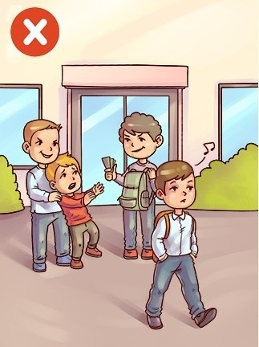

Absence Of Peoples Conscious/ *words colored in black text is english*
Ausencia de la conciencia de las personas
* palabras coloreadas en texto azul es español *
Throuhgout our lives we have experienced or seen a situation when no one does anything when someone or something
is in need of help./
A lo largo de nuestras vidas, hemos experimentado o visto una situación en la que nadie hace nada cuando alguien o algo necesita ayuda.

- One: What do you see in the image?/
Uno:Qué ves en la imagen?
- Two: How do you feel about this image?/
Dos:Cómo te sientes acerca de esta imagen?
- Three: What would you do in this situation?/
Tres:Qué harías en esta situación?

The more and more days pass by we are leaving a part of ourselves. And that's our conscious its what makes us
react to somthing that is happening and being able to give a helping hand or change the situation. Nowadays
most people see something that shouldn't be happening but we don't do anything about it we either watch,
walk away or worst record and post it on social media for everybody to see.These actions that we take
could take someone or something life away in an instant. Who will stay with that blame you and the
person who caused it. Why have we let this happen to us? It's not like it just happened we chose to let
this those to be within us. Like bacteria, it's feeding on us and passing it on to others.
Cuantos más días pasan, estamos dejando una parte de nosotros mismos. Y esa es
nuestra conciencia es lo que nos hace reaccionar ante algo que está sucediendo y ser capaz de ayudar o
cambiar la situación. Hoy en día la mayoría de las personas ven algo que no debería estar sucediendo, pero
nosotros no hacemos nada al respecto o miramos, alejarse o registrar lo peor y publicarlo en las redes sociales
para que todos lo vean. Estas acciones que tomamos podría quitarle la vida a alguien o algo en un instante.
¿Quién se quedará con esa culpa tú y el persona que lo causó. ¿Por qué dejamos que esto nos suceda? No es que
simplemente sucedió, elegimos dejar esto esos para estar dentro de nosotros. Al igual que las bacterias, se está
alimentando de nosotros y transmitiéndoselo a otros.